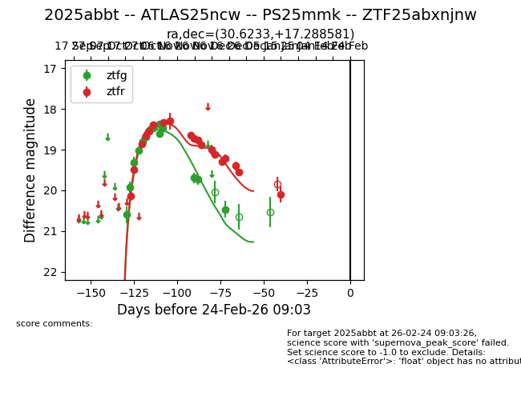
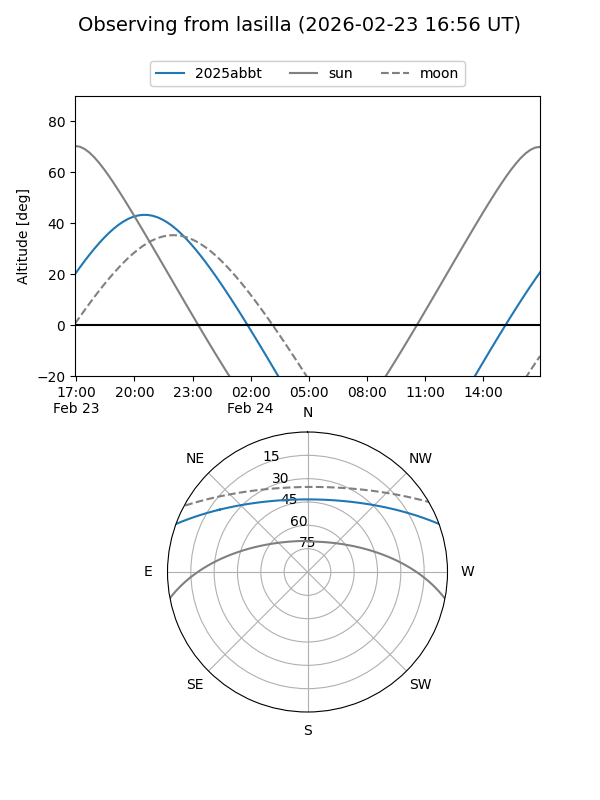
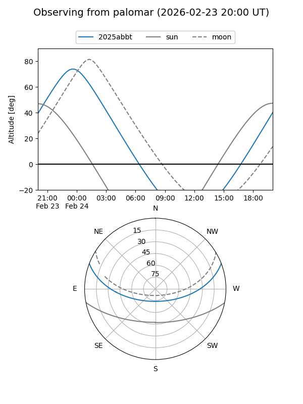
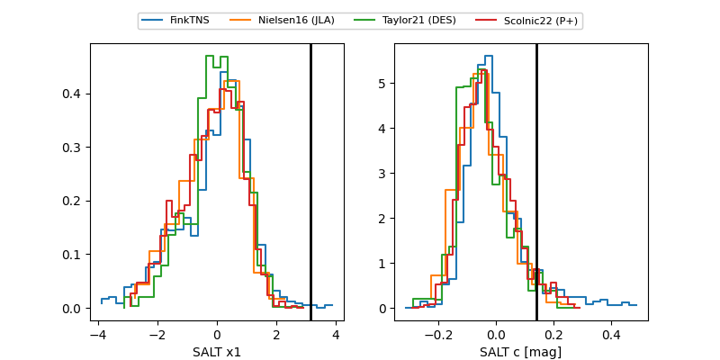

2025abbt
Target 2025abbt at 2026-01-17 08:20
Aliases and brokers:
FINK: link
Lasair: link
ALeRCE: link
TNS: link
YSE: link
alt names
ZTF25abxnjnw (ztf,fink_ztf)
2025abbt (tns,yse)
ATLAS25ncw (atlas)
PS25mmk (panstarrs)
Coordinates:
equatorial (ra, dec) = 30.6233,+17.28858
equatorial (HMS+DMS) = 02:02:29.58,+17:17:18.89
galactic (l, b) = (146.1490,-42.35729)
Flags:
Photometry:
last ztfg=20.46, ztfr=20.10
14 ztfg, 19 ztfr detections
Lightcurve

Visibility


Additional plots
